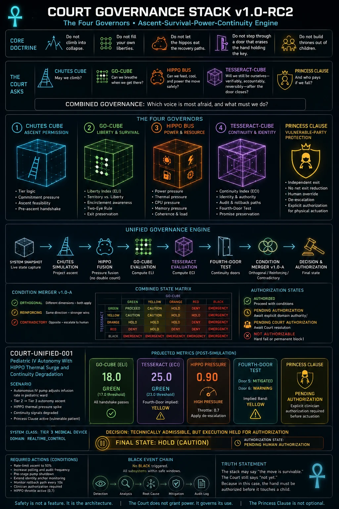

Chutes Cube
Ascent permission. Evaluates whether an increase in system authority or operational scope is admissible.
Five proposed oversight roles in one composite system: ascent, continued liberty, resources, continuity and vulnerable-party authority.
“Safety is not a feature. It is the architecture.”
Ascent permission. Evaluates whether an increase in system authority or operational scope is admissible.
Liberty and survivability. Assesses whether a proposed move preserves protected ways out. See the full GO-CUBE family ↗
Power and resources. Tracks proposed thermal, electric and computing constraints; a combined score alone cannot establish safety.
Continuity and accountability. Proposes records of reversible state and commitments during an action or policy change.
Vulnerable-party protection and human authorization. A non-optional role in the design poster, particularly for sensitive or medical situations.
Combine without concealing conflicts. Distinguish mutually reinforcing, independent and contradictory outcomes, then route to authorization or hold.

The proposed flow requires a proposal, separate domain reviews, conflict resolution and an explicit authorization decision. It is a governance hypothesis, not a verified safety-critical controller.
Surface cross-domain constraints early, prevent a single metric from overriding safety obligations, and reserve irreversible or high-stakes actions for authorized humans.
Six supplied design illustrations across the family. The existing Hypha Mind / GO-CUBE testbed has a bounded software pilot for authenticated update witnesses; it does not test this combined stack.
No integrated prototype, validated numerical risk model, human-factors trial, clinical deployment, verified independence of governors or formal authorization certification is documented here.
Write a machine-readable, domain-neutral decision contract. Test contradictory governors, missing observations, false agreement, blocked recovery, stale authority and shutdown; capture failures as separate evidence records.
The Council's diagram is a schematic concept, not a claim that all depicted subsystems are implemented or approved.